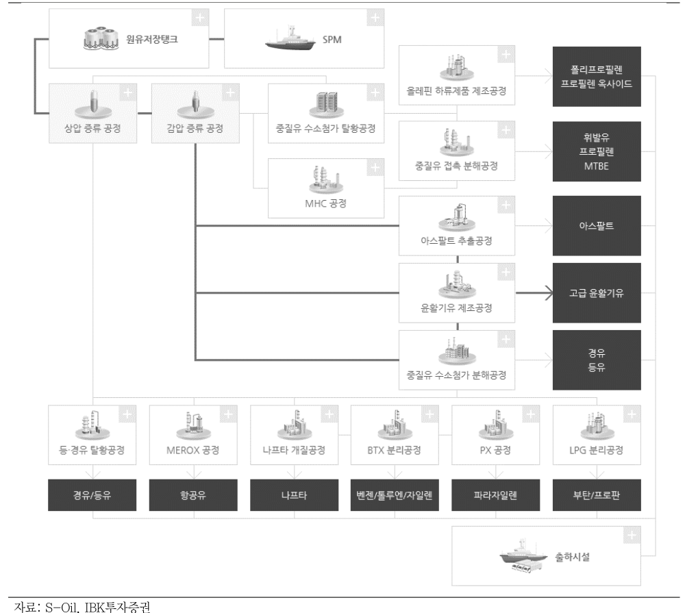

윤활기유와 유통 — 그룹Ⅲ 공백이 만든 사상 최대 스프레드, 내수는 최고가격제에 묶임
한눈에 보기
결론
- 중동 3대 그룹Ⅲ 거점(카타르 Pearl GTL·UAE Ruwais·바레인 Sitra)이 동시에 이탈 → 한국 윤활기유 수출가 2월 117 → 8월 295달러/bbl
- 그룹Ⅲ는 설비 3~4년·OEM 승인에 묶여 가격이 올라도 공급이 안 늘어남 → 쟁점은 «정점»보다 «정점 이후 하락 속도»(Pearl GTL 1Q27 복구)
- 내수는 3/13 석유 최고가격제 + 수출 한도로 묶임 → 정유사 기회손실 약 4.7조원(3/13~6/20 추정), 보상 산정이 남은 변수
| 항목 | 값 | 비고 | 출처 |
|---|---|---|---|
| 한국 윤활기유 수출가 | 117 → 295달러/bbl | 26-02 → 26-08(1~20일) | (하나, 26-08-24) |
| 윤활기유−B-C 스프레드 | 49 → 215달러/bbl | 2월 → 7월, 과거 평균 65 | (하나, 26-08-03; 유안타) |
| 세계 그룹Ⅲ 생산 부족 | 2026 −27% · 1H27 −12% | 업계 추정 | (IBK, 26-10-15) |
| 한국의 그룹Ⅲ 비중 | 약 40% | 세계 고부가 그룹Ⅲ | (IBK; 하나, 26-06-29) |
| 최고가격제 기회손실 | 약 4.7조원 | 휘발유+경유, MOPS 기준 | (BNK, 26-07-03) |
flowchart LR subgraph L["윤활기유"] A["원료<br/>VGO·잔사유(UCO)"] --> B["윤활기유<br/>그룹Ⅰ·Ⅱ·Ⅲ"] B --> C["블렌더<br/>윤활유 배합"] C --> D["OEM 승인<br/>엔진오일 규격"] A -.->|디젤 마진↑이면 경쟁| E["디젤·항공유"] end subgraph R["국내 연료 유통"] F["정유사<br/>세전 공급가 = MOPS·환율"] --> G["대리점·주유소<br/>알뜰주유소 포함"] G --> H["소비자"] P["정부<br/>최고가격제·수출 한도"] -.-> F end
구성: IBK(2026-10-15) 원가 구조·규격 장벽, 하이(2026-10-23) UCO 조달, BNK(2026-07-03) 공급가 결정식·최고가격제를 엮음. 유통 단계 구조(대리점 등)는 일반 구조이며 원천 수치 없음 ⚠
- 관련 노트: 00_원유_index · 01_원유_용어집 · 02_원유_수급과유가 · 03_원유_정제마진 · 04_원유_석유제품수요와수출 · 06_원유_시장규모모델 · 07_원유_하우스시각_변경이력 · 08_원유_트래킹캘린더
- 원천 편중: 윤활기유·유통 리포트는 2026년 6월 이후에 집중, 2025년 스프레드 기준선·주유소 통계는 얇음 ⚠
① 기초: 윤활기유 등급과 공정
요약
- 윤활기유 = 윤활유의 대부분을 차지하는 원료, API 기준 그룹Ⅰ~Ⅴ로 나뉨
- 그룹Ⅱ와 Ⅲ의 경계(점도지수 120)가 설비·규격 두 겹의 진입장벽
API 등급 체계
| 등급 | 포화탄화수소 | 황 | 점도지수 | 공정 |
|---|---|---|---|---|
| 그룹Ⅰ | 90% 미만 | 0.03% 초과 | 80~120 | 용제 정제 |
| 그룹Ⅱ | 90% 이상 | 0.03% 이하 | 80~120 | 수첨 처리 |
| 그룹Ⅲ | 90% 이상 | 0.03% 이하 | 120 이상 | 수첨분해+촉매탈랍 |
| 그룹Ⅳ | — | — | — | PAO 합성 |
| 그룹Ⅴ | — | — | — | 에스터 등 |
(IBK, 2026-10-15, API 1509). 그룹Ⅲ 신규 설비 리드타임 3~4년

출처: IBK투자증권(S-Oil 자료), 2026-10-15, p.7 그림 3
왜 그룹Ⅱ로 내려갈 수 없나 — 규격의 벽
| 요건 | 의미 | 그룹Ⅱ | 그룹Ⅲ |
|---|---|---|---|
| 저점도화(0W-20 → 0W-8) | 낮은 점도에서 유막 유지 | 대응 구간 축소 | 대응 |
| HTHS | 고온·고부하 유막 | 조합 어려움 | 대응 |
| NOACK | 증발 손실 억제 | 조합 어려움 | 대응 |
| 산화안정성 | 교환주기 연장 | 제한적 | 우수 |
| OEM 승인 | 미승인 시 워런티 클레임 | 하향 시 상실 | 표준 |
(IBK, 2026-10-15)
- 원료 VGO는 수첨분해로 디젤·항공유도 됨 → 디젤 크랙 강세 시 원료가 연료 쪽으로 빠짐(«원료의 벽») (IBK, 2026-10-15)
- 고품질 그룹Ⅲ는 파라핀계 중질 유분이 유리 → 중동 중질유 감소 시 수율도 악화 (IBK, 2026-10-15)
- 수출 스프레드 = 윤활기유 수출단가 − 벙커C(HSFO) 대용 지표 (IBK, 2026-10-15)
- 원료 투입과 판매 사이 1~2개월 래깅 → 원료가 하락기엔 이익 확대 (IBK, 2026-10-15)
② 2026년 그룹Ⅲ 공급 충격
요약
- 호르무즈 통항 차질 → Pearl GTL 피격 → 서구 역내 여유 능력 부재가 «순서대로» 겹침
- 휴전은 정상화가 아님: 설비 복구 → 품질 안정화 → 운송 → 유통재고 재축적까지 순차 진행
사건 타임라인
| 시점 | 사건 | 출처 |
|---|---|---|
| 2025 | 미국 그룹Ⅲ 수입 중 중동 40%+ (3년 연속) | (IBK, 26-10-15) |
| 26-01 | 미국 그룹Ⅲ 수입 중 중동 약 55% | (IBK, 26-10-15) |
| 26-03-09 | 바레인 Bapco Sitra 불가항력 | (IBK, 26-10-15) |
| 26-03-18 | Pearl GTL 피격, 트레인 1기 손상 | (IBK, 26-10-15) |
| 26-03-26 | API 긴급 임시 라이선스(EPL) 발동 | (IBK, 26-10-15) |
| 26-04-03 | GM, dexos 규격 완화 거부 | (IBK, 26-10-15) |
| 26-05 | 미국 그룹Ⅲ 갤런당 10달러 돌파(연초 5.8) | (IBK, 26-10-15) |
| 26-06 | 한국 윤활기유 수출액 7.09억달러, 사상 최대 | (IBK, 26-10-15) |
| 26-08-19 | 한국-북미 그룹Ⅲ 장기공급 협약 | (IBK, 26-10-15) |
| 26-10-01 | API EPL 90일 추가 연장 | (IBK, 26-10-15) |
| 26-10-08 | Pearl GTL #1 일부 재가동 | (BNK, 26-10-30) |
| 1Q27 말 | Pearl GTL 손상 트레인 복구 목표 | (하나, 26-08-03) |
08-19 협약 = SK엔무브–HF Sinclair. EPL은 6/26에 이미 90일 1차 연장(IBK)
중동 3대 그룹Ⅲ 거점
| 거점 | 성격 | 차질 | 복구 전망 |
|---|---|---|---|
| Pearl GTL(카타르) | 가스 원료 GTL, 약 3만b/d | 3/18 피격, 전체 정지 | 손상 트레인 약 1년 |
| ADNOC Ruwais(UAE) | 중동 그룹Ⅲ 능력 약 40% | 공격·물류로 가동 제약 | 12~18개월 |
| Bapco Sitra(바레인) | 정유 통합 기유 설비 | 3/9 불가항력 | 12~18개월 |
(IBK, 2026-10-15). 3곳 = 미국 그룹Ⅲ 수입의 약 44%, 유럽 그룹Ⅲ 수입의 약 72%. 카타르 2025년 기유 선적 170만톤+(6년 내 최대)
중동 의존도 — 하우스마다 숫자가 다름
| 지표 | 값 | 출처 |
|---|---|---|
| 중동 3곳의 세계 그룹Ⅲ 생산 비중 | 35% | (하나, 26-06-29) |
| 중동의 세계 그룹Ⅲ 생산 비중 | 약 30% | (하이, 26-10-23) |
| 걸프 지역의 그룹Ⅲ 생산 비중 | 20% | (한국투자, 26-06-05) |
| Pearl GTL 세계 점유율 | 25% | (하나, 26-06-29) |
| Pearl GTL 점유율 | 20% | (BNK, 26-07-03) |
| Pearl GTL 그룹Ⅲ 능력 | 1.3만b/d | (유안타, 26-11-03) |
하나: 미국 그룹Ⅲ 수입의 46%가 중동, 27%가 한국. IBK: 미국 수입 중 한국 30%. 기준·범위가 달라 직접 비교 불가 ⚠
- 3개 충격이 서로의 해법을 막음(ILMA 표현): Pearl만 멈췄으면 UAE·바레인이, 해협만 막혔으면 재고·우회로가 흡수했을 것 (IBK, 2026-10-15)
- 중동 기유 정상화엔 CDU·VDU·Hydrocracker 전체 재가동 후 UCO 조달 필요 → 실제 생산은 더 늦을 가능성 (하이, 2026-10-23)
- 유럽 그룹Ⅲ 생산 설비 2기 중 1기(핀란드 Neste)도 8~10월 정기보수 (한국투자, 2026-06-05)
- 9~10월 그룹Ⅱ 정기보수(사우디 Luberef 2.4만b/d, 대만 Formosa 1.2만b/d) → 그룹Ⅱ도 강세 (하나, 2026-08-24)
③ 가격·스프레드
요약
- 원료 벙커C가 내리는데 수출가는 오름 → 스프레드가 과거 고점(100달러)의 2배 이상
- 미국향 수출가가 평균보다 52% 높음 → 판매 지역 믹스가 이익을 키움
한국 윤활기유 수출단가 (달러/bbl)
xychart-beta title "한국 윤활기유 수출단가 (USD/bbl)" x-axis ["26-02","26-05","26-07","26-08"] y-axis "USD/bbl" 0 --> 350 line [117,233,294,295]
26-08 = 1~20일. 자료: 하나(2026-08-03·08-24), 5월은 IBK(2026-10-15) 그림 판독. IBK는 7월을 285로 표기(하나 294와 차이) ⚠. 6월은 톤 기준 1,865달러(MoM +8%, YoY +110%)(하나, 2026-07-06), 2월 864달러/톤(BNK, 관세청)
| 지표 | 값 | 출처 |
|---|---|---|
| 스프레드 2월 | 49달러/bbl | (하나, 26-08-24) |
| 스프레드 7월 | 215달러/bbl(MoM +25%) | (하나, 26-08-03) |
| 스프레드 8월(1~20일) | 206달러/bbl | (하나, 26-08-24) |
| 스프레드 3Q26 | 226달러/bbl | (유안타, 26-11-03) |
| 과거 평균(2015~) | 65달러/bbl | (유안타, 26-11-03) |
| 과거 고점·바닥 | 100 · 30달러/bbl | (유안타, 26-11-03) |
유안타 본문은 과거 평균 64달러·3Q26 220달러로도 표기(그래프 라벨 65·226). 9월 이후 월별 단가 ⚠ 원문 없음 — BNK(10-30)는 «9월까지 수출 ASP 계속 상승», 하이(11-03)는 «연초 대비 약 2배»로만 서술
지역별 가격
| 지역·등급 | 값 | 출처 |
|---|---|---|
| 한국 미국향 수출가(8월) | 447달러/bbl(MoM +19%) | (하나, 26-08-24) |
| 한국 전체 평균(8월) | 295달러/bbl | (하나, 26-08-24) |
| 유럽·미국 그룹Ⅲ | 540달러/bbl(4,000달러/톤) | (하나, 26-08-24) |
| 유럽 그룹Ⅲ(6월 첫 주) | 485달러/bbl(3,025달러/톤) | (한국투자, 26-06-05) |
| 유럽 그룹Ⅲ(2025 하반기) | 약 220달러/bbl | (한국투자, 26-06-05) |
| 미국 그룹Ⅲ(5월) | 갤런당 10달러+ | (IBK, 26-10-15) |
유럽 2025 하반기 값은 그래프 판독, 근사. 한투: 유럽 그룹Ⅰ도 급등. 하이(10-23): 기유 가격 연초 대비 +170%
- 미국향 5~7월 수출 26.6만톤 vs 전년 13.5만톤(약 2배), 7월은 2022-09 이후 최대 (하나, 2026-08-24)
- 미국향 비중 2025년 13% → 2026년 23% (하나, 2026-08-03)
- 중남미(브라질)향은 그룹Ⅱ 부족에 따른 차익거래로 사상 최대 (하나, 2026-08-24)
- 유가·OSP 하락기에도 그룹Ⅲ 판가는 잘 안 내려옴 → «원가↓·판가 유지» 비대칭 (IBK, 2026-10-15)
이익으로 본 크기 (산업 합산)
| 지표 | 값 | 출처 |
|---|---|---|
| 정유 4사 2Q26 윤활 영업이익 | 약 1.7조원 | (IBK, 26-10-15) |
| 2Q26 윤활 영업이익률 | 35~52% | (IBK, 26-10-15) |
| 2Q26 정유 영업이익률 | 6~17% | (IBK, 26-10-15) |
| 윤활 설비 / 원유 처리능력 | 3~6% | (IBK, 26-10-15) |
- 같은 회사 안에서 배럴당 영업이익 윤활이 정유의 약 13배(3Q26 가동률 반영 사례) (IBK, 2026-11-03)
- 4사 윤활기유 사업가치 합산 34~38조원(2027 정상화 EBITDA × 6~9배) — IBK 단독 추정 (IBK, 2026-10-15)
④ 수요와 공급 능력
요약
- 전동화는 엔진오일 «총량»을 줄이지만 저점도·하이브리드가 «그룹Ⅲ 비중»을 올림
- 증설은 2027년 이후 몰려 있어 1H27 공백을 메울 설비는 없음, 한국 진영 증설이 점유율 확대 기회
수요 드라이버
| 드라이버 | 물량 | 그룹Ⅲ 믹스 | 경로 |
|---|---|---|---|
| BEV 확산 | ↓↓ | — | 엔진오일 차량 감소 |
| 저점도화 | — | ↑↑ | 0W-20 → 0W-8 |
| 하이브리드 | ↓(완화) | ↑ | 잦은 시동 → 산화 스트레스 |
| 교환주기 연장 | ↓ | ↑ | 산화안정성 요구 |
| 신흥국 보유대수 | ↑ | ↑ | 인도·동남아·중남미 |
| 액침 냉각 | ↑(신규) | ↑↑ | 데이터센터 반복 보충 |
| EV 전용 유체 | ↑(소량) | ↑ | 절연·구리 부식 방지 |
(IBK, 2026-10-15, Kline·ILMA)
| 지표 | 값 | 출처 |
|---|---|---|
| 세계 그룹Ⅲ 수요 | 연 600만톤(추정) | (BNK, 26-07-03) |
| 세계 액침 냉각 시장 2024 | 53.8억달러 | (IBK, 26-10-15) |
| 세계 액침 냉각 시장 2030E | 177.7억달러 | (IBK, 26-10-15) |
| 자동차용 비중(한 생산자 사례) | 86% | (IBK, 26-10-15) |
액침 냉각 원자료 LG전자. 자동차용 86% = SK엔무브 2025년 판매 비중 추정치
국내 생산자 비교 (산업 비교표)
| 생산자 | 능력(b/d) | 등급 | 거점 |
|---|---|---|---|
| SK엔무브 | 70,800 | 그룹Ⅲ 중심 | 울산·인니·스페인 |
| S-Oil | 42,700 | 그룹Ⅰ~Ⅲ | 온산 |
| GS칼텍스 | 26,000 | 그룹Ⅱ·Ⅲ | 여수 |
| HD현대쉘베이스오일 | 20,000 | Ⅱ → Ⅲ(2027) | 대산 |
(IBK, 2026-10-15). DB(2026-10-08)는 SK엔무브 그룹Ⅲ 8만b/d·세계 1위로 표기 ⚠. S-Oil 그룹Ⅲ 비중 약 40%·수출 비중 80%대(IBK)
| 연 생산량 추정 | 만톤 | 세계 그룹Ⅲ 수요 대비 |
|---|---|---|
| SK엔무브 | 150 | 25% |
| S-Oil | 120 | 20% |
| Pearl GTL | 120 | 20% |
| 3사 합산 | 390 | 65% |
(BNK, 2026-07-03). 비중 = 각 생산량 ÷ 600만톤으로 계산
증설 파이프라인
| 지역 | 프로젝트 | 등급 | 가동 시점 |
|---|---|---|---|
| 북미 | Chevron 파스카굴라 | 그룹Ⅲ+ | 2027년 이후 |
| 북미 | ExxonMobil | 그룹Ⅲ+ | 2027년 이후 |
| 유럽 | Shell 베셀링(독일) | 그룹Ⅲ 계열 | 2026~2028 |
| 인도 | 국영 정유사 | 그룹Ⅱ·Ⅱ+ | 2028년까지 2배+ |
| 사우디 | Luberef 얀부 | Ⅲ·Ⅲ+ 검토 | 미정 |
| 한국 | SK엔무브 울산 | 그룹Ⅲ 연 20만톤 | 3Q27 목표 |
| 한국 | HD현대쉘베이스오일 | Ⅱ → Ⅲ 전환 | 2027 목표 |
(IBK, 2026-10-15). 유안타(11-03): 2027 증설 인도 4,700·사우디 3,500·중국 4,000b/d. 한투(06-05, Argus): 세계 기유 능력 2030년까지 약 6,000만톤대(그래프 판독, 근사)
한국 수출 물량 — 하우스마다 해석이 다름
| 하우스 | 판단 | 출처 |
|---|---|---|
| iM | 수출 규제 대상 외 → 물량 전년 상회 | (iM, 26-09-16) |
| KB | 3Q 수출량 QoQ +10% | (KB, 26-08-14) |
| 하이 | 장기계약 탓 물량은 전년과 유사 | (하이, 26-10-23) |
iM: 8월까지 수출액 «4.2 vs 2.4 백만달러»(약 2배) — 단위 오기 추정(십억달러) ⚠
- 블렌더·OEM과의 장기계약 구조 → 2026년은 «가격» 효과, 고객 이전은 계약 종료 후 2027~28년 (하이, 2026-10-23)
- 한 생산자 전사 가동률 약 60% → 신규 계약 유입 시 즉시 물량 대응 가능(사례) (하이, 2026-10-23)
- 한국 지위의 원천 = 호르무즈와 무관한 수출 항로 + 전 등급 설비 + 레시피 표준 브랜드 (IBK, 2026-10-15)
⑤ 국내 유통: 최고가격제·수출 한도·주유소
요약
- 3/13 보통휘발유·자동차/선박 경유·실내등유 최고가격제 시행 → 3월 중순~4월 중순 공급가 격차 최대
- 손실보전은 «원가+적정 마진» 기준(정부) vs «MOPS 기회손실»(정유사) → 정산위원회 심의가 핵심
제도 경과
| 시점 | 내용 | 출처 |
|---|---|---|
| 26-03-13 | 석유제품 최고가격제 시행 | (BNK, 26-07-03) |
| 26-03-13 | 수출 전년 동월 100% 이내 제한 | (하나, 26-11-02) |
| 26-06-18 | 손실보전 고시안 행정예고 | (BNK, 26-07-03) |
| 26-06 말 | 고시안 확정·최고액정산위원회 출범 | (BNK, 26-07-03) |
| 26-08-29 | 정유사 보상 신청 마감 | (BNK, 26-07-03) |
| 3~4Q26 | 회계법인 검증·위원회 심의 | (BNK, 26-07-03) |
| 26-11~ | 경유 수출 한도 110% | (하나, 26-11-02) |
| 26-11 현재 | 최고가격제 유지(완화·종료 미정) | (하나, 26-11-16) |
- 정유사 세전 공급가 = 직전 주 MOPS 변동률·환율의 함수(추정치와 실제의 상관계수 0.95) (BNK, 2026-07-03)
- 규제 대상의 대부분은 휘발유+경유, 실내등유는 3% (BNK, 2026-07-03)
- 정부는 MOPS 반영 불가 원칙 재확인 → MOPS 기준 손실은 «참고자료», 핵심은 «적정 마진» 판단 (BNK, 2026-07-03)
최고가격제로 낮아진 공급가 (원/리터, 주간)
xychart-beta title "최고가격제 공급가 격차 (원/리터) — 휘발유·경유 순" x-axis ["03-14","03-21","03-28","04-04","04-11","04-18","04-25","05-02","05-09","05-16","05-23","05-30","06-06","06-13","06-20"] y-axis "원/리터" 0 --> 1500 line [133.4,473.7,636.8,338.0,368.0,267.7,162.0,158.4,230.2,222.3,278.8,301.8,153.9,137.0,130.0] line [299.7,849.8,1149.1,1089.9,1462.9,1125.8,598.3,403.8,491.2,304.9,384.2,405.5,192.2,292.2,168.7]
선 순서: ① 휘발유 ② 경유. 격차 = «최고가격제 없었을 때 추정 공급가 − 실제 공급가». 자료: BNK(2026-07-03) 표 2, MOPS·환율 기반 추정
주간 기회손실 (휘발유+경유, 십억원)
xychart-beta title "주간 기회손실 추정 (십억원)" x-axis ["03-14","03-21","03-28","04-04","04-11","04-18","04-25","05-02","05-09","05-16","05-23","05-30","06-06","06-13","06-20"] y-axis "십억원" 0 --> 700 line [154,462,623,521,677,517,280,202,255,179,226,240,117,152,101]
자료: BNK(2026-07-03) 표 3. 주간 소비량 가정 휘발유 2억6,341만ℓ·경유 3억9,650만ℓ. 15주 합계 약 4.7조원, 내수 M/S로 나누면 4사 모두 1조원+ 추정
- 경유 영향이 훨씬 큼 = 리터당 격차가 크고 주간 소비량도 휘발유보다 약 50% 많음 (BNK, 2026-07-03)
- 6월 중순 이후 유가 하락 → 한 정유사 기준 내수 손실 소멸 추정 (삼성, 2026-07-03)
- 보상금 일부를 4Q26에 반영한 추정(정유 +0.5조원, 한 회사 사례) vs 보수적 산정 가능성 (KB, 2026-08-03; 미래에셋, 2026-11-02)
- 최고가격제 종료 시 내수 판매 손익 개선이 2027년 긍정 요인 (하나, 2026-11-16)
주유소·유류세·국내 소비
| 항목 | 내용 | 출처 |
|---|---|---|
| 알뜰주유소 | 참여 정유사는 내수 비중↑ → 상한제 손실↑ | (KB, 26-08-03) |
| 정유 수출 비중 | 정유사별 50~71% | (KB, 26-08-03) |
| 직영 주유소 부지 | 116개 매각·세일즈앤리스백(2021) | (iM, 26-08-27) |
| 국내 경유 소비 | 하반기 감소 → 수출 한도 완화 근거 | (하나, 26-11-02) |
| 유류세 | 위기 시나리오에서 «전면 면제» 언급뿐 | (IBK, 26-04-07) |
알뜰주유소 사례 = S-Oil(수출 비중 54%), 부지 매각 사례 = SK에너지(7,638억원)
- 주유소 수·알뜰주유소 점유율·주유소 마진: ⚠ 원문 없음
- 2026년 실제 유류세 인하율·환원 일정: ⚠ 원문 없음
- 국내 석유제품 월간 소비량(휘발유·경유·등유) 통계: ⚠ 원문 없음 — BNK 주간 가정치만 있음
⑥ 하우스별 시각과 변화
요약
- «2026 윤활 호황 = 중동 공급 충격»에는 공통 시각, 갈리는 건 2027년 «평균 이하 회귀(유안타)» vs «새 정상가격(IBK·하이)»
- 최고가격제는 손실 규모보다 «보상 기준»이 쟁점
| 질문 | 하우스·날짜 | 입장 |
|---|---|---|
| 윤활 강세 지속 기간 | BNK 26-07-03 | 연말~1H27, 하반기 하향 안정 |
| 하나 26-06-29 | 2027년까지 지속 | |
| LS 26-10-06 | 그룹Ⅲ 쇼티지 1년 이상 | |
| IBK 26-10-15 | 최소 2027 중반, 새 정상가격 | |
| 하이 26-11-03 | 2027년에도 지속 | |
| BNK 26-10-30 | 2027 수익성 낮아질 가능성 큼 | |
| 하나 26-11-16 | 2027 마진·실적 조정 가능성 높음 | |
| 유안타 26-11-03 | 1Q27 말부터 평균 이하로 | |
| Pearl GTL 복구 | BNK 26-07-03 | #1 하반기, #2 1~2Q27 |
| 하나 26-08-03 | 손상 트레인 1Q27 말(Shell) | |
| 하이 26-10-23 | UCO 조달 탓 실제 생산 더 늦음 | |
| 최고가격제 | BNK 26-07-03 | MOPS 기준 손실 약 4.7조원 |
| 삼성 26-07-03 | 6월 중순 이후 손실 소멸 | |
| 미래에셋 26-11-02 | 보전 금액 보수적 산정 가능성 | |
| 하나 26-11-16 | 종료 시 2027 내수 손익 개선 |
2년 사이 바뀐 것
| 시점 | 시장의 질문 | 하우스 |
|---|---|---|
| ~2025 | 윤활기유는 정유의 «각주», 전동화로 축소 | (IBK 회고) |
| 2026-03~06 | 최고가격제 손실은 얼마? | (BNK·삼성) |
| 2026-06~08 | 그룹Ⅲ 쇼티지, 얼마나 오르나 | (하나·한국투자·BNK) |
| 2026-10 | 정점 이후 하락 속도는? | (IBK·하이·LS) |
| 2026-11 | Pearl 복구 후 2027 감익 폭은? | (유안타·하나·BNK) |
- BNK: 07-03 «하반기 점차 하향 안정화» → 10-30 «Pearl #1 10/8 재가동, 2027 그룹Ⅲ 수익성 하락 가능성 큼»으로 하락 쪽 유지·구체화
- 하나: 06-29 «2027년까지 강세» → 11-16 «2027년 공급 정상화와 함께 조정 가능성 높음»으로 전환
- IBK: 10-15 «감익과 재평가 동시 가능» — 하락 방향보다 속도에 무게
- 상세는 07_원유_하우스시각_변경이력
⑦ 트래킹 포인트
| 시점 | 확인할 것 | 좋은 신호 | 나쁜 신호 |
|---|---|---|---|
| 매월 | 한국 윤활기유 수출단가 | 250달러/bbl 이상 유지 | 150달러 이하 급락 |
| 매월 | 미국향 수출 비중·단가 | 20%대·프리미엄 유지 | 비중 10%대 복귀 |
| 1Q27 말 | Pearl GTL 재가동 | 지연·품질 안정화 지체 | 조기 정상 출하 |
| 분기 | API EPL 연장 여부 | 추가 연장 | 종료 |
| 수시 | 그룹Ⅲ 장기계약 공시 | 신규 장기계약 | 스팟 위주 회귀 |
| 3Q27 | 국내 그룹Ⅲ 증설 가동 | 일정 준수 | 지연 |
| 2027~ | 북미 그룹Ⅲ+ 가동 | 2028 이후로 지연 | 조기 가동 |
| 4Q26~1Q27 | 최고가격제 보상 확정 | 원가+마진 넉넉히 인정 | 소액 확정 |
| 수시 | 최고가격제 종료 | 종료·완화 | 연장 |
| 수시 | 경유 수출 한도 | 110% → 추가 완화 | 100% 복귀 |
수출단가 기준치(250·150달러)는 본 노트 시계열·과거 고점(100달러)을 보고 정한 작성자 기준 ⚠. 일정은 08_원유_트래킹캘린더
출처 (펼쳐 보기)
- IBK투자증권 이동욱, 윤활기유의 시대: 정유 섹터는 읽는 문법이 바뀌었다 (2026-10-15) — p.5~38
- IBK투자증권 이동욱, S-Oil 같은 한 배럴, 윤활이 만드는 13배 (2026-11-03) · 복합 왜곡의 시대 (2026-04-07) p.57
- 하나증권 윤재성, 에너지/화학 Weekly Monitor (2026-06-29, 07-06, 08-03, 08-24, 11-02) — 5개 호
- 하나증권, 원료는 남아돌고 제품은 귀해진다 (2026-11-16) — p.8~9
- BNK투자증권, 고유가 정상화, 이제는 최고 가격제 보상안을 논할 시점 (2026-07-03) — p.4~8, 16~17
- BNK투자증권, SK이노베이션 3Q26 (2026-10-30)
- 유안타증권 황규원, 2027년 정유/화학 엿보기 (2026-11-03) — p.17~18
- 하이투자증권, SK엔무브 스페인 ILBOC 공장 투어 후기 (2026-10-23) · S-Oil 피크아웃이 아니라 높아진 기본 체력 (2026-11-03)
- 한국투자증권 이충재, 미국-이란 전쟁(12): 원유 재고 감소 가속화와 윤활기유 부족 (2026-06-05, 스캔본 판독) — p.1~2
- KB증권, S-Oil 2Q26 Review (2026-08-03) · 정유/화학 Monthly 8월 (2026-08-14)
- iM증권, 이란전쟁 이후의 산업 재편 (2026-09-16) p.81 · SK이노베이션 SKIET 합병 (2026-08-27)
- 삼성증권, S-Oil 2Q26 preview (2026-07-03)
- 미래에셋증권, S-Oil 4Q26 Preview (2026-11-02)
- LS증권, SK이노베이션 윤활기유 경쟁력 (2026-10-06)
- DB금융투자, 생산여력이 남아있는 윤활기유 그룹III (2026-10-08)참조 리포트 수 23 = 개별 리포트 18 + 하나 Weekly 5개 호. 기업 리포트는 산업 사실·사례만 발췌(회사 실적 박스 없음)
다음 갱신 때 확인할 것
- 2026년 9월 이후 한국 윤활기유 월별 수출단가·스프레드 ⚠ 원문 없음
- 7월 수출단가 IBK 285 vs 하나 294 차이 원인(집계 기간) ⚠
- 중동 그룹Ⅲ 비중(20%·30%·35%)과 Pearl 점유율(20%·25%)의 기준 차이 ⚠
- SK엔무브 능력 70,800 vs 8만b/d 표기 차이 ⚠
- iM 윤활기유 수출액 단위(«백만달러») 확인 ⚠
- 최고가격제 보상금 확정액·지급 시점, 제도 종료 시점
- 주유소 수·알뜰주유소 점유율·유류세 인하율 — 오피넷·석유공사 자료로 보강 필요 ⚠
- 2025년 윤활기유 스프레드 기준선(전쟁 전) 월별 값 ⚠
한 줄: 2026년 윤활기유는 «가격이 올라도 공급이 안 늘어나는» 그룹Ⅲ의 구조를 드러냈고, 쟁점은 Pearl GTL 복구 뒤 스프레드가 과거 평균(65달러)까지 돌아가느냐 그 위에서 멈추느냐. 내수 연료는 최고가격제·수출 한도라는 정책 변수가 이익을 좌우